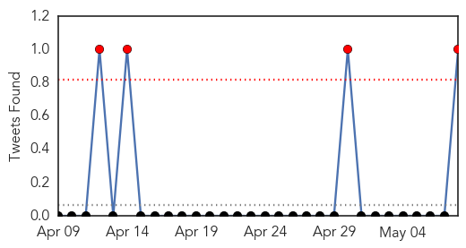
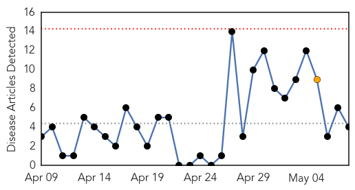
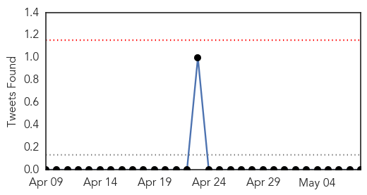
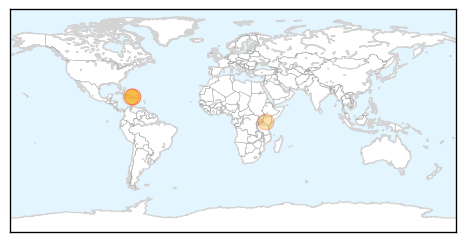
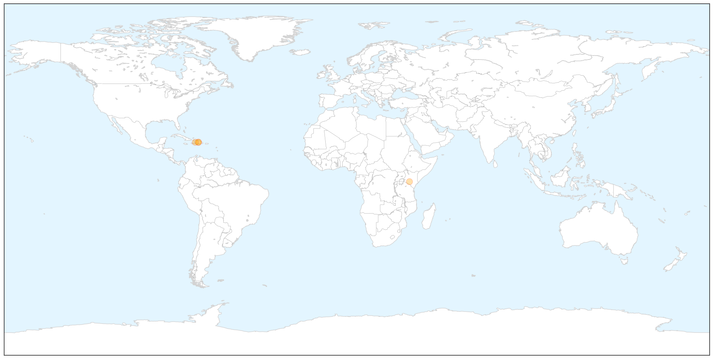

Influenza
30-Day Web Trend
1 alerts, 0 warnings

30-Day Twitter Trend
4 alerts, 0 warnings

Article Locations


Article Confidences

Top Articles:
- 0.993
- Ineffective flu vaccine partly responsible for spike in flu deaths
- 0.950
- Wisconsin senator joins calls for better funding to fight avian flu
- 0.826
- Avian influenza current outbreak is unlike any other
- 0.786
- Change in pattern of H5N2 spread raises questions
- 0.751
- May 8, 2015 Archives
- 0.751
- May 8, 2015 Archives
- 0.751
- May 7, 2015 Archives
- 0.730
- More than 5 million birds dead in Minn. from bird flu outbreak
- 0.566
- Infection control nurses step into spotlight
Top Tweets:
- 0.917
- If the pathogen that causes the disease is known it should be part of the disease name (e.g. coronavirus influenza virus salmonella)
Cholera
30-Day Web Trend
0 alerts, 1 warnings

30-Day Twitter Trend
0 alerts, 0 warnings

Article Locations

X

Article Confidences

Top Articles:
- 0.999
- Cholera Cases Hike in Republic of Haiti, UN Struggles to Tackle the Epidemic
- 0.997
- UN struggles to stem new rise in Haiti cholera cases, news, Health News, AsiaOne YourHealth
- 0.992
- UN struggles to stem new rise in Haiti cholera cases
- 0.987
- Kenya Cholera Outbreak 2015: Nairobi Bans Raw Food, Hawking To Contain Spread Of Water-Borne Illness In Kibera Slum
Top Tweets:
-
No tweets found for May 08, 2015